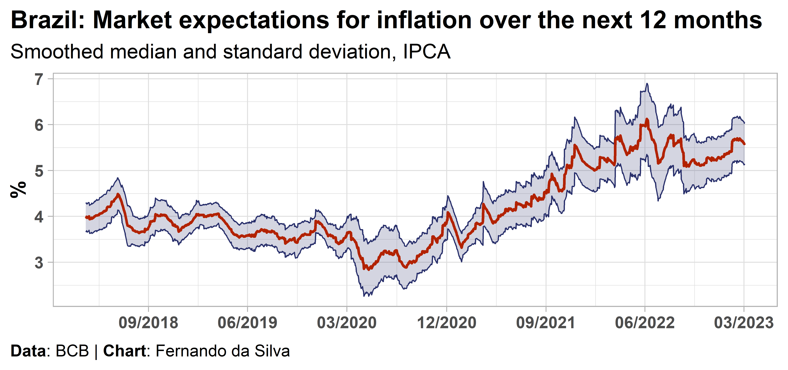

Quick and easy access to market expectations data of the Focus report from Central Bank of Brazil
R
Macroeconomics
Data
API
English
Author
Fernando da Silva
Published
March 13, 2021
Modified
March 10, 2023
Very happy to announce that meedr, my first package on R, is on its way to CRAN!
Note: This package was definitively archived by CRAN on July 22, 2021 and is only available on GitHub. Despite this, maintenance and bug fixes will continue to be done.
The goal of meedr is to provide quick and easy access to market expectations data for the main macroeconomic indicators in the Focus report, made available by the Central Bank of Brazil through the Expectations System data API. This data comes from several financial institutions such as banks, brokers, funds, consultancies, etc.
The meedr package offers an R interface to the API and other advantages:
Use of a caching system with package memoise to speed up repeated requests for data;
Users can utilize all cores of the machine (parallel computing) when fetching a large batch of time series.
Installation
You can install the development version from GitHub with:
# Quarterly market expectations for GDP indicatormeedr::get_quarterly(indicator ="PIB Total",first_date ="2021-01-01",reference_date =paste0( lubridate::quarter(Sys.Date()), "/", lubridate::year(Sys.Date()) ),be_quiet =TRUE )
# A tibble: 884 × 10
indicator date reference…¹ mean median sd min max n_res…² basis
<chr> <date> <chr> <dbl> <dbl> <dbl> <dbl> <dbl> <int> <int>
1 PIB Total 2023-03-03 1/2023 1.72 1.64 1.03 -0.4 4.69 30 1
2 PIB Total 2023-03-03 1/2023 1.76 1.69 0.785 -0.4 4.69 84 0
3 PIB Total 2023-03-02 1/2023 1.82 1.86 1.11 -0.4 4.69 27 1
4 PIB Total 2023-03-02 1/2023 1.73 1.64 0.800 -0.4 4.69 84 0
5 PIB Total 2023-03-01 1/2023 1.76 1.86 0.994 -0.4 3.8 25 1
6 PIB Total 2023-03-01 1/2023 1.71 1.6 0.769 -0.4 3.8 85 0
7 PIB Total 2023-02-28 1/2023 1.67 1.7 0.911 -0.4 3.8 37 1
8 PIB Total 2023-02-28 1/2023 1.71 1.6 0.769 -0.4 3.8 85 0
9 PIB Total 2023-02-27 1/2023 1.72 1.68 0.834 -0.4 3.8 65 1
10 PIB Total 2023-02-27 1/2023 1.71 1.6 0.769 -0.4 3.8 85 0
# … with 874 more rows, and abbreviated variable names ¹reference_date,
# ²n_respondents
get_annual()
Code
# Annual market expectations for SELIC and exchange rate (BRL) indicatormeedr::get_annual(indicator =c("Selic", "Câmbio"),reference_date =format(Sys.Date(), "%Y"),be_quiet =TRUE )
# A tibble: 1,970 × 11
indicator detail date referenc…¹ mean median sd min max n_res…²
<chr> <lgl> <date> <chr> <dbl> <dbl> <dbl> <dbl> <dbl> <int>
1 Selic NA 2023-03-03 2023 12.9 12.8 0.739 10.8 13.8 136
2 Selic NA 2023-03-03 2023 12.9 12.8 0.710 11 13.8 44
3 Câmbio NA 2023-03-03 2023 5.23 5.25 0.166 4.7 5.8 115
4 Câmbio NA 2023-03-03 2023 5.20 5.2 0.171 4.8 5.6 38
5 Selic NA 2023-03-02 2023 12.9 12.8 0.743 10.8 13.8 136
6 Selic NA 2023-03-02 2023 12.9 12.8 0.668 11.2 13.8 45
7 Câmbio NA 2023-03-02 2023 5.24 5.25 0.168 4.7 5.8 115
8 Câmbio NA 2023-03-02 2023 5.24 5.26 0.170 4.85 5.6 40
9 Selic NA 2023-03-01 2023 12.9 12.8 0.747 10.8 13.8 134
10 Selic NA 2023-03-01 2023 12.8 12.8 0.738 11 13.8 47
# … with 1,960 more rows, 1 more variable: basis <int>, and abbreviated
# variable names ¹reference_date, ²n_respondents
get_inflation_12m()
Code
# Inflation over the next 12 months# First, and a suggestion, run this for using parallel computing:future::plan(future::multisession, workers =floor(future::availableCores()/2))meedr::get_inflation_12m(indicator =c("IGP-DI", "IGP-M", "INPC", "IPA-DI", "IPA-M", "IPCA", "IPCA-15", "IPC-Fipe" ),smoothed ="yes",be_quiet =FALSE, # display messagesdo_parallel =TRUE# turn on parallel computing )
Running parallel with 2 cores (4 available)
Fetching [IGP-DI, IGP-M, INPC, IPA-DI, IPA-M, IPCA, IPCA-15, IPC-Fipe] data from BCB-Olinda...
# Monthly market expectations for IGP-M indicator (Top 5 Focus)meedr::get_monthly_top5(indicator ="IGP-M",first_date =NULL, # get all data to current datecalc_type ="long",be_quiet =TRUE )
# A tibble: 77,024 × 9
indicator date reference_date calc_type mean median sd min max
<chr> <date> <chr> <chr> <dbl> <dbl> <dbl> <dbl> <dbl>
1 IGP-M 2022-02-18 02/2022 L 1.70 1.8 0.306 1.1 1.95
2 IGP-M 2022-02-18 03/2022 L 0.798 0.75 0.133 0.64 1
3 IGP-M 2022-02-18 04/2022 L 0.592 0.45 0.244 0.35 1
4 IGP-M 2022-02-18 05/2022 L 0.448 0.33 0.271 0.2 0.9
5 IGP-M 2022-02-18 06/2022 L 0.574 0.5 0.133 0.41 0.76
6 IGP-M 2022-02-18 07/2022 L 0.46 0.43 0.0953 0.35 0.6
7 IGP-M 2022-02-18 08/2022 L 0.476 0.5 0.0931 0.36 0.62
8 IGP-M 2022-02-18 09/2022 L 0.536 0.5 0.104 0.4 0.7
9 IGP-M 2022-02-18 10/2022 L 0.534 0.5 0.065 0.45 0.62
10 IGP-M 2022-02-18 11/2022 L 0.574 0.6 0.114 0.44 0.76
# … with 77,014 more rows
get_annual_top5()
Code
# Annual market expectations for SELIC indicator (Top 5 Focus)meedr::get_annual_top5(indicator ="Selic",be_quiet =TRUE,use_memoise =FALSE# disable caching system )
# A tibble: 6,134 × 9
indicator date reference_date calc_type mean median sd min max
<chr> <date> <chr> <chr> <dbl> <dbl> <dbl> <dbl> <dbl>
1 Selic 2023-03-03 2023 S 12.8 12.8 0.857 10.8 13.8
2 Selic 2023-03-03 2024 S 10.2 10 1.10 8.25 13.8
3 Selic 2023-03-03 2025 S 8.81 9 0.968 6 11
4 Selic 2023-03-03 2026 S 8.60 8.5 1.08 5 11
5 Selic 2023-03-03 2027 S 8.54 8.5 1.15 5 11
6 Selic 2023-03-03 2023 L 12.6 12.5 0.663 11.8 13.8
7 Selic 2023-03-03 2024 L 9.9 10 0.860 8.5 11
8 Selic 2023-03-03 2025 L 9.55 9.5 0.678 8.5 10.5
9 Selic 2023-03-03 2026 L 9.4 9.5 0.8 8.5 10.5
10 Selic 2023-03-03 2027 L 9.62 9.75 0.740 8.5 10.5
# … with 6,124 more rows
Data visualization
Now we will create a cool chart about inflation expectations in Brazil. First, we will import the data from the Central Bank API using meedr:
Code
# Get market expectations for inflation over the next 12 monthsinflation <- meedr::get_inflation_12m(indicator ="IPCA",first_date =Sys.Date() -months(5*12),smoothed ="yes" )
Next, we use ggplot2 to generate a customized line chart. We plot the median of expectations and one standard deviation to observe some data distribution.
Code
# Plotinflation |> dplyr::filter(basis ==0) |> ggplot2::ggplot() + ggplot2::aes(x = date) + ggplot2::geom_ribbon(mapping = ggplot2::aes(ymin = median - sd, ymax = median + sd),alpha =0.2, fill ="#282f6b" ) + ggplot2::geom_line(mapping = ggplot2::aes(y = median - sd), size =0.5, color ="#282f6b" ) + ggplot2::geom_line(mapping = ggplot2::aes(y = median + sd), size =0.5, color ="#282f6b" ) + ggplot2::geom_line(mapping = ggplot2::aes(y = median, colour ="IPCA"),size =1, color ="#b22200" ) + ggplot2::scale_x_date(date_breaks ="9 months", date_labels ="%m/%Y") + ggplot2::labs(title ="Brazil: Market expectations for inflation over the next 12 months",subtitle ="Smoothed median and standard deviation, IPCA",x =NULL,y ="%",caption ="**Data**: BCB | **Chart**: Fernando da Silva" ) + ggplot2::theme_light(base_size =16) + ggplot2::theme(plot.title = ggplot2::element_text(face ="bold"),plot.caption = ggtext::element_textbox_simple(margin = ggplot2::margin(10, 0, 0, 0) ),plot.title.position ="plot",plot.caption.position ="plot",axis.text = ggplot2::element_text(face ="bold"),axis.title = ggplot2::element_text(face ="bold"),legend.text = ggplot2::element_text(face ="bold") )

And that’s it!
The process of developing a package is a lot of learning and enrichment. Soon I intend to increase the package with new utilities. In the meantime, feel free to use and test the package, I will be happy to receive any feedback!
GitHub repo and documentation
Check the source code and other information in the package repository on GitHub.
---title: "meedr: MacroEconomic Expectations Data in R"date: "2021-03-13"date-modified: "2023-03-10"author: "Fernando da Silva"description: "Quick and easy access to market expectations data of the Focus report from Central Bank of Brazil"categories: [R, Macroeconomics, Data, API, English]image: "imgs/logo.png"aliases: - /posts/r/meedr/index.html---Very happy to announce that `{meedr}`, my first package on R, is on its way to CRAN!**Note**: This package was definitively archived by CRAN on July 22, 2021 and is only available on GitHub. Despite this, maintenance and bug fixes will continue to be done.::: {.grid}::: {.g-col-10}The goal of `{meedr}` is to provide quick and easy access to market expectations data for the main macroeconomic indicators in the Focus report, made available by the **Central Bank of Brazil** through the [Expectations System data API](https://olinda.bcb.gov.br/olinda/servico/Expectativas/versao/v1/aplicacao#!/recursos). This data comes from several financial institutions such as banks, brokers, funds, consultancies, etc.:::::: {.g-col-2}<imgsrc="imgs/logo.png"align="right"height="139"/>::::::The `{meedr}` package offers an R interface to the API and other advantages:- Use of a caching system with package `{memoise}` to speed up repeated requests for data;- Users can utilize all cores of the machine (parallel computing) when fetching a large batch of time series.## InstallationYou can install the development version from GitHub with:```r# install.packages("devtools")devtools::install_github("schoulten/meedr")```## Features- To retrieve data from the API, there are several useful functions that connect to the endpoints: - Monthly market expectations with [get_monthly()](#get_monthly) - Quarterly market expectations with [get_quarterly()](#get_quarterly) - Annual market expectations with [get_annual()](#get_annual) - Market expectations for inflation over the next 12 months with [get_inflation_12m()](#get_inflation_12m) - Monthly market expectations for the Top 5 indicators with [get_monthly_top5()](#get_monthly_top5) - Annual market expectations for the Top 5 indicators with [get_annual_top5()](#get_annual_top5)## ExampleThese are some basic examples of using the package:### get_monthly()```{r}library(meedr)# Monthly market expectations for IPCA indicatormeedr::get_monthly(indicator ="IPCA",first_date =Sys.Date() -30,reference_date =format(Sys.Date(), "%m/%Y"),be_quiet =TRUE )```### get_quarterly()```{r}# Quarterly market expectations for GDP indicatormeedr::get_quarterly(indicator ="PIB Total",first_date ="2021-01-01",reference_date =paste0( lubridate::quarter(Sys.Date()), "/", lubridate::year(Sys.Date()) ),be_quiet =TRUE )```### get_annual()```{r}# Annual market expectations for SELIC and exchange rate (BRL) indicatormeedr::get_annual(indicator =c("Selic", "Câmbio"),reference_date =format(Sys.Date(), "%Y"),be_quiet =TRUE )```### get_inflation_12m()```{r}#| message: true#| warning: true# Inflation over the next 12 months# First, and a suggestion, run this for using parallel computing:future::plan(future::multisession, workers =floor(future::availableCores()/2))meedr::get_inflation_12m(indicator =c("IGP-DI", "IGP-M", "INPC", "IPA-DI", "IPA-M", "IPCA", "IPCA-15", "IPC-Fipe" ),smoothed ="yes",be_quiet =FALSE, # display messagesdo_parallel =TRUE# turn on parallel computing )```### get_monthly_top5()```{r}# Monthly market expectations for IGP-M indicator (Top 5 Focus)meedr::get_monthly_top5(indicator ="IGP-M",first_date =NULL, # get all data to current datecalc_type ="long",be_quiet =TRUE )```### get_annual_top5()```{r}# Annual market expectations for SELIC indicator (Top 5 Focus)meedr::get_annual_top5(indicator ="Selic",be_quiet =TRUE,use_memoise =FALSE# disable caching system )```## Data visualizationNow we will create a cool chart about inflation expectations in Brazil. First, we will import the data from the Central Bank API using `{meedr}`:```{r}# Get market expectations for inflation over the next 12 monthsinflation <- meedr::get_inflation_12m(indicator ="IPCA",first_date =Sys.Date() -months(5*12),smoothed ="yes" )```Next, we use `{ggplot2}` to generate a customized line chart. We plot the median of expectations and one standard deviation to observe some data distribution.```{r}#| fig-width: 8.5# Plotinflation |> dplyr::filter(basis ==0) |> ggplot2::ggplot() + ggplot2::aes(x = date) + ggplot2::geom_ribbon(mapping = ggplot2::aes(ymin = median - sd, ymax = median + sd),alpha =0.2, fill ="#282f6b" ) + ggplot2::geom_line(mapping = ggplot2::aes(y = median - sd), size =0.5, color ="#282f6b" ) + ggplot2::geom_line(mapping = ggplot2::aes(y = median + sd), size =0.5, color ="#282f6b" ) + ggplot2::geom_line(mapping = ggplot2::aes(y = median, colour ="IPCA"),size =1, color ="#b22200" ) + ggplot2::scale_x_date(date_breaks ="9 months", date_labels ="%m/%Y") + ggplot2::labs(title ="Brazil: Market expectations for inflation over the next 12 months",subtitle ="Smoothed median and standard deviation, IPCA",x =NULL,y ="%",caption ="**Data**: BCB | **Chart**: Fernando da Silva" ) + ggplot2::theme_light(base_size =16) + ggplot2::theme(plot.title = ggplot2::element_text(face ="bold"),plot.caption = ggtext::element_textbox_simple(margin = ggplot2::margin(10, 0, 0, 0) ),plot.title.position ="plot",plot.caption.position ="plot",axis.text = ggplot2::element_text(face ="bold"),axis.title = ggplot2::element_text(face ="bold"),legend.text = ggplot2::element_text(face ="bold") )```And that's it!The process of developing a package is a lot of learning and enrichment. Soon I intend to increase the package with new utilities. In the meantime, feel free to use and test the package, I will be happy to receive any feedback!## GitHub repo and documentationCheck the source code and other information in the package repository on [GitHub](https://github.com/schoulten/meedr).Check the package documentation on [this page](https://fortietwo.com/meedr/).{{< include ../../R/_session_info_pt.qmd >}}{{< include ../../styles/html/_footer_pt.qmd >}}